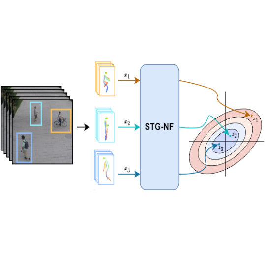

CapeX: Category-Agnostic Pose Estimation from Textual Point Explanation
UNDER REVIEW
I am a Ph.D. candidate at the School of Electrical Engineering at Tel-Aviv University, under the joint supervision of Prof. Shai Avidan.
My research interests include machine learning and computer vision. More specifically, I am interested in developing new tools for pose estimation, semantic correspondence and other vector semantic representations.
